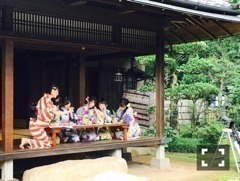

| 2016/08 03 Wed | ひめたん-0o0-その658 |

髪伸びたー＼(^o^)／
最近ストレートが気分です
ちょっと前まで巻くのが好きだったのに
わからんものですね。
さて、
事前にお知らせできなくてごめんなさい！
7/31オンエアの
文化放送 乃木坂46の「の」に
出演しました！
乃木のののフリーダム感好き＼(^o^)／
楽しかったです～＊
日曜の夜はらじらー！サンデー
ゲストは星野みなみちゃんでした！
みなみの毒舌相談室がもう可愛かった。
前回来てくれた放送から繋がっている感じが
いいな～と思いました( ˆωˆ )◎
対決も楽しかったです！
みなみちゃんまた来てね～！
そして、次回は8月の1週目、
連続になりますが奇数週なので乃木坂です。
ゲストは声優アーツに伊波杏樹さん、
小林愛香さん、小宮有紗さん、
乃木坂から北野日奈子ちゃんです！
私ときいちゃんはライブが終わって
そのまま名古屋からお送りします
オリラジさんは東京からという初めての形。
募集中のメールテーマは
◯きいちゃんへの応援メッセージ
◯RAPでお祝いNOGIZAKA CHAN
◯20歳だから...セクシーに言ってみろ！対決
◯らじらー！ラブストーリー
「真夜中の電話...」
◯ひとりノリひめたん
お便りの宛先はこちら
さらに、オンエアの最後にも言いましたが
らじらー！が3週分お休みになってしまうため
放送がない間もリスナーさんと楽しめる
こんな企画をご用意しました！
◯妄想ダイアリー
詳しくは公式サイトまで＼(^o^)／
5日は写真集お渡し会、
6日7日は名古屋でツアー、
7日は夜にラジオもあります。
今年の8月6日、
私は名古屋で過ごすことになるのかな。
～お知らせ～
雑誌
8/5 乃木坂46 2nd写真集
8/6 TopYell
8/23 BRODY
8/24 ストリートジャック
TV
8/5 バズリズム

「裸足でSummer」ブックレット
個人写真は私どうやら通常盤にいるそう。
これは使われてない別カットのやつ～
なんか今日写真少ないな( ´ ･ω･ ` )
B.L.T.のオフショット貼る！
かずみんが若干隠れちゃってますが......
各々好きなことしてます
お気に入りの一枚。

ヒムケン先生......！
(＊´・ω・＊)
コメント(786)
2016/08/03 23:30